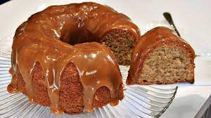

Bolo de canela

Ingredientes
Bolo
- 4 ovos (clara + gema)
- 1 xícara (chá) de açúcar
- 3 colheres (sopa) de manteiga
- 1 xícara (chá) de leite morno
- 1 colher (sopa) de canela em pó
- 2 xícaras (chá) de farinha de trigo
- 1 colher (sopa) de fermento químico
- 1 pitada de sal
Ganache de canela
- 1 xícara de creme de leite
- 200 g de chocolate branco
- 1 colher (chá) de canela em pó
Modo de preparo
Bolo
- Bater as claras em neve com metade do açúcar e reservar.
- Na batedeira, bater as gemas com o restante dio açúcar, a manteiga, o leite e a canela.
- Adicionar a farinha, o fermento e o sal, e bater um pouco mais.
- Acrescentar as claras em neve e delicadamente envolver a massa.
- Assar a 180º C por 40 minutos.
Ganache de canela
- Levar ao fogo baixo todos os ingredientes, mexendo semopre, até derreter todo o chocolate.
- Deixar esfriar e cobrir o bolo já assado.
Observações:
Pode-se substiruir a ganache de canela por doce de leite.
Receita originalmente zero açúcar, utilizando adoçante culinário forneável (expecificamente a sucralose) no lugar do açúcar e chocolate branco zero açúcar.